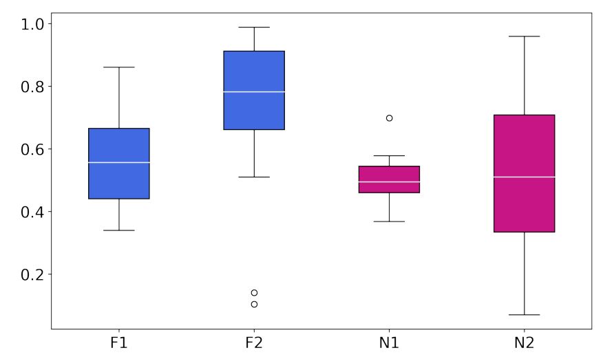
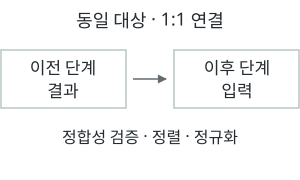

데이터셋 특성에 맞춘 효율적인 오버샘플링
데이터셋의 분류 복잡도에 맞춰 기존 완전 균형 방식보다 적은 생성량을 적용하고, 여러 실험 조건에서 분류 성능을 유지하거나 개선했습니다.


데이터사이언스 박사 · 불균형 학습 · ML 데이터 구성
불균형 학습을 연구하고, 현업 데이터를 모델 학습과 평가로 연결합니다.
학위과정에서는 데이터 분포에 따른 학습 편향을 연구했고, 현업에서는 제조 데이터를 검증·연결해 학습용 데이터셋을 구성했습니다.
이 경험을 통해 데이터의 의미와 관계를 이해하는 일이 모델 적용의 출발점임을 배웠습니다. 이를 바탕으로 문제를 정의하고 학습·평가를 구성합니다.
데이터셋의 분류 복잡도에 맞춰 기존 완전 균형 방식보다 적은 생성량을 적용하고, 여러 실험 조건에서 분류 성능을 유지하거나 개선했습니다.

두 단계의 데이터를 동일 대상 기준으로 1:1 연결하고, 정합성 검증과 정렬·정규화로 분석·학습용 데이터셋을 구성했습니다.
